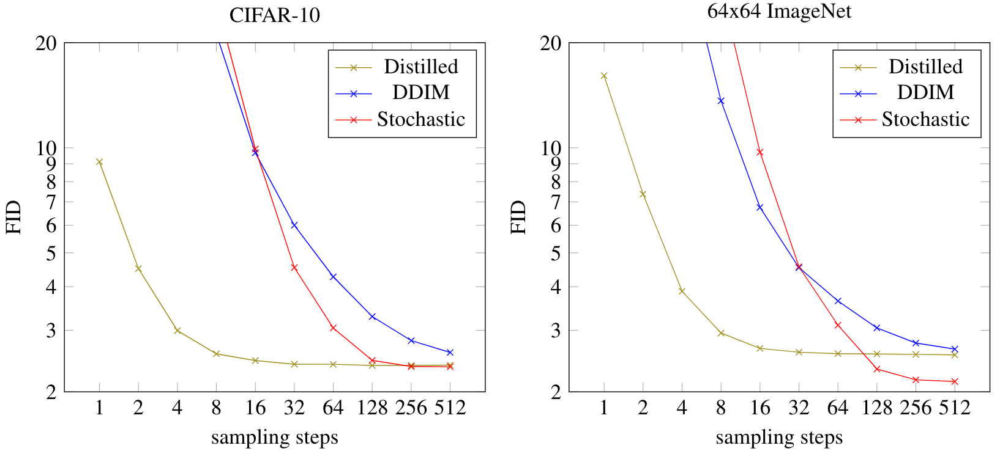

扩散模型蒸馏方法
Introduction
尽管扩散模型在生成质量、似然估计和训练稳定性上表现出卓越的性能，但其最大的缺点就是采样耗时。为此，许多采样器被提出以加速采样过程，例如 DDIM, Analytic-DPM, PNDM, DPM-Solver 等等，它们着眼于更精确地求解扩散 ODE，例如采用高阶的求解器并充分利用扩散 ODE 的特殊结构。然而，受制于模型本身的误差，此类 training-free 的方法再精确也难以做到 10 步以内的高质量生成。
随着领域的发展，如今扩散模型使用的网络架构已经基本收敛（特别是文生图应用上基本都用 SD 系列），这使得在原有网络的基础上蒸馏一个新的网络成为了不错的方案。所谓蒸馏，即训练一个 student 模型，其一步去噪的效果相当于原 teacher 模型多步去噪的效果。相比优化采样器的方法，基于蒸馏的方法往往能够实现 4 步、2 步甚至 1 步采样，彻底解决扩散模型采样耗时的问题。
一个自然的问题是，为什么蒸馏可以 work？换句话说，为什么我们不直接在较少步数上训练模型，偏偏要在较多步数上训练之后再蒸馏，这难道不是多此一举吗？这是因为，扩散模型的标准训练流程是依靠不断采样、每次拟合一个 \(\mathbf x_0\) 的方式来拟合 \(\mathbb E[\mathbf x_0\vert\mathbf x_t]\)，这种训练方式的损失函数的方差很大，直观上训练曲线会非常振荡，不利于模型收敛。而蒸馏时 teacher 模型给出的监督信号本就是对 \(\mathbb E[\mathbf x_0\vert\mathbf x_t]\) 的近似，所以蒸馏损失的方差显著降低，训练过程更平稳，模型更容易收敛。不过，蒸馏虽然减少了训练损失的方差，但 teacher 模型对 \(\mathbb E[\mathbf x_0\vert\mathbf x_t]\) 的估计是有偏差的，所以这里存在 bias-variance trade-off.
Progressive Distillation
Progressive distillation[1] 的基本思想是每次蒸馏将采样步数缩短到原来的一半，如此进行 \(\log_2 N\) 次迭代，就可以把 \(N\) 步采样模型蒸馏为 1 步采样模型。

具体而言，假设有一个 teacher 扩散模型 \(\mathbf x_\eta(\cdot)\)，我们希望从中蒸馏一个 student 模型 \(\mathbf x_\theta(\cdot)\)，使其一步去噪相当于 teacher 模型两步去噪的效果。因此蒸馏时，首先从数据集中采样样本 \(\mathbf x_0\)，添加噪声得到 \(\mathbf x_t\)；然后用 teacher 模型实施两步 DDIM 去噪，得： \[ \begin{gather} \mathbf x_{t'}=\alpha_{t'}\mathbf x_\eta(\mathbf x_t)+\frac{\sigma_{t'}}{\sigma_t}(\mathbf x_t-\alpha_t\mathbf x_\eta(\mathbf x_t))\\ \mathbf x_{t''}=\alpha_{t''}\mathbf x_\eta(\mathbf x_{t'})+\frac{\sigma_{t''}}{\sigma_{t'}}(\mathbf x_{t'}-\alpha_{t'}\mathbf x_\eta(\mathbf x_{t'})) \end{gather} \] 那么对于 student 模型，我们希望它一步去噪就能得到 \(\mathbf x_{t''}\)，即： \[ \mathbf x_{t''}=\alpha_{t''}\mathbf x_\theta(\mathbf x_t)+\frac{\sigma_{t''}}{\sigma_t}(\mathbf x_t-\alpha_t\mathbf x_\theta(\mathbf x_t)) \] 整理得： \[ \mathbf x_\theta(\mathbf x_t)=\frac{\mathbf x_{t''}-(\sigma_{t''}/\sigma_t)\mathbf x_t}{\alpha_{t''}-(\sigma_{t''}/\sigma_t)\alpha_t} \] 因此右边就是 student 模型的拟合目标，故损失函数为： \[ \mathcal L_\theta=w_t\left\Vert\mathbf x_\theta(\mathbf x_t)-\frac{\mathbf x_{t''}-(\sigma_{t''}/\sigma_t)\mathbf x_t}{\alpha_{t''}-(\sigma_{t''}/\sigma_t)\alpha_t}\right\Vert_2^2 \] 待 student 模型收敛后就完成了一轮蒸馏，采样步数减少了一半。迭代执行多轮蒸馏即可指数式地减少采样步数。
算法流程的对比图如下所示（符号略有不同，绿色高亮是与标准训练流程相比不同的地方）：

Progressive distillation 的蒸馏效果如下图所示，可以看见，蒸馏后 4 到 8 步采样的结果就可以与 DDIM 100 步的结果持平，从而大幅加速了采样过程。

Guided Diffusion Distillation
Reflow
Consistency Distillation
Latent Consistency Distillation
Adversarial Diffusion Distillation
InstaFlow
Distribution Matching Distillation
Trajectory Consistency Distillation
Reference
- Salimans, Tim, and Jonathan Ho. Progressive distillation for fast sampling of diffusion models. arXiv preprint arXiv:2202.00512 (2022). ↩︎
- Meng, Chenlin, Robin Rombach, Ruiqi Gao, Diederik Kingma, Stefano Ermon, Jonathan Ho, and Tim Salimans. On distillation of guided diffusion models. In Proceedings of the IEEE/CVF Conference on Computer Vision and Pattern Recognition, pp. 14297-14306. 2023. ↩︎
- Liu, Xingchao, Chengyue Gong, and Qiang Liu. Flow straight and fast: Learning to generate and transfer data with rectified flow. arXiv preprint arXiv:2209.03003 (2022). ↩︎
- Song, Yang, Prafulla Dhariwal, Mark Chen, and Ilya Sutskever. Consistency models. arXiv preprint arXiv:2303.01469 (2023). ↩︎
- Luo, Simian, Yiqin Tan, Longbo Huang, Jian Li, and Hang Zhao. Latent consistency models: Synthesizing high-resolution images with few-step inference. arXiv preprint arXiv:2310.04378 (2023). ↩︎
- Sauer, Axel, Dominik Lorenz, Andreas Blattmann, and Robin Rombach. Adversarial diffusion distillation. arXiv preprint arXiv:2311.17042 (2023). ↩︎
- Liu, Xingchao, Xiwen Zhang, Jianzhu Ma, and Jian Peng. Instaflow: One step is enough for high-quality diffusion-based text-to-image generation. In The Twelfth International Conference on Learning Representations. 2023. ↩︎
- Yin, Tianwei, Michaël Gharbi, Richard Zhang, Eli Shechtman, Fredo Durand, William T. Freeman, and Taesung Park. One-step diffusion with distribution matching distillation. arXiv preprint arXiv:2311.18828 (2023). ↩︎
- Zheng, Jianbin, Minghui Hu, Zhongyi Fan, Chaoyue Wang, Changxing Ding, Dacheng Tao, and Tat-Jen Cham. Trajectory Consistency Distillation. arXiv preprint arXiv:2402.19159 (2024). ↩︎